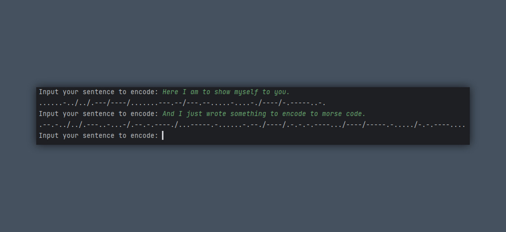

Morse Encoder
This Python script converts text input into Morse code through an interactive console interface. It includes a dictionary (encode_dictionary) that maps each letter (A-Z), number (0-9), space (encoded as /), comma (,), and period (.) to their respective Morse code equivalents. The script continuously prompts users to input a sentence, translating it into Morse code and displaying the result. If the user inputs an invalid character, the script marks it with a ?. Users can stop the program by typing QUIT or pressing Ctrl+C. This tool is ideal for learning Morse code, encoding messages, or understanding text-to-Morse translation.